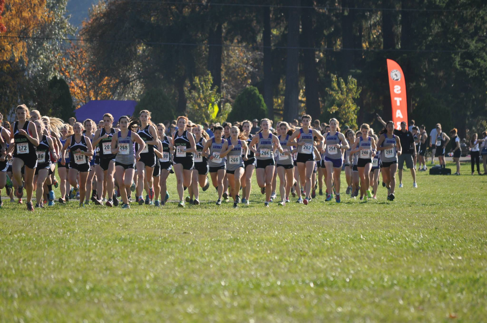

CAMP IS NOW FULL Join us for 5 days of running, playing games and learning about cross country with South Eugene cross country runners! Kids will be separated into age groups, participate in age-appropriate activities and games, and will get finish off the week with a fun cross country race on nearby soccer fields. Kids will also hear from professional athletes and coaches from the community, including Team Run Eugene, and Oregon Track Club Elite. Activities will include yoga, learning how to properly warm up, running technique, relays, obstacle courses, and more! Camp counselors will be current South Eugene cross country runners. This camp is a great opportunity for 1st-8th graders with or without running experience to learn about the sport of running and get some fun exercise!
-
Camp will be from 9:00-12:00, August 24th-28th. Snacks and shirts will be provided. Cost is $55 per camper, or a family rate of $45 per camper (2 siblings or more).
Please register by August 18th so we have a good idea of how many campers to expect
Payments for camp must be made the morning of the 24th (the first day of camp). Please arrive at the South Track at 8:30 am the morning of the 24th to make camp payments. CASH OR CHECKS ONLY. Checks can be made out to South Eugene High School
This camp is a fundraiser for the South Eugene cross country program. All camp proceeds go towards sending south athletes to meets and other team expenses. Thank you for your support!
If you have any questions contact us here
CAMP IS NOW FULL 